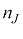
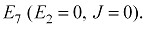
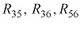

СХЕМА, що досліджується:

Рис. 1. Схема кола, що досліджується
Вихідні дані:
Параметри джерел енергії:
Параметри елементів кола:
ВИКОНАННЯ ЗАВДАННЯ
1. Розрахувати струми у вітках заданої схеми методом контурних струмів. Зробити перевірку правильності розрахунків, склавши баланс потужностей.
Рис. 2. Схема кола для аналізу методом контурних струмів
Для розрахунку кола методом контурних струмів потрібно скласти рівняння за другим законом Кірхгофа для незалежних контурів відносно контурних струмів. Кількість рівнянь дорівнює кількості незалежних контурів. Кількість незалежних контурів визначаємо за формулою
де – кількість віток у колі; – кількість вузлів;  – кількість віток з джерелами струму.
Для кола, що розглядаємо:
Отримали, що за методом контурних струмів потрібно скласти три рівняння, оскільки контурний струм відомий. Виберемо напрями контурних струмів у контурах однаково(див. рис. 2) і запишемо рівняння.
Визначимо власні опори контурів:
Взаємні опори у даному випадку – від’ємні:

Контурні ЕРС:
Підставимо ці значення у початкову систему рівнянь:
Після спрощення отримаємо:
Розв’язуємо систему рівнянь за допомогою визначників:
Знаходимо контурні струми:
Всі контурні струми додатні - дійсні їх напрямки співпадають із вибраними. Для перевірки вірності розрахунків підставимо знайдені контурні струми у початкові рівняння.
Тотожність лівої і правої частин кожного з цих рівнянь свідчить про правильність їх розв’язку.
Визначимо струми віток, які дорівнюють алгебраїчним сумам контурних струмів, що проходять у вітках:

Для перевірки вірності розрахунків складемо баланс потужностей:
У вітках із ЕРС напрями струмів співпадають із напрямами ЕРС, тому потужності джерел напруги додатні. Для визначення потужності джерела струму J необхідно визначити напругу на його полюсах:
Потужність джерел: рівняння:
Потужність споживачів:
Оцінка похибки розрахунку визначається за формулою:
Баланс потужностей зійшовся із допустимою похибкою, що означає правильність розв’язку задачі.
2. Розрахувати струми у всіх вітках заданої схеми методом вузлових потенціалів. Побудувати потенціальну діаграму для контура, якій проходить через обидва джерела напруги.
Рис. 3. Схема кола для аналізу методом вузлових потенціалів
Метод вузлових потенціалі базується на першому законі Кірхгофа і законі Ома. Кількість незалежних рівнянь, що складаються за першим законом Кірхгофа на одиницю менше від кількості вузлів . Один із вузлів кола можна заземлити, розподіл струмів у колі при цьому не зміниться. Якщо у вітці між двома вузлами є ЕРС без послідовного резистора то прийнявши потенціал одного із цих вузлів за нульовий, одержуємо потенціал другого вузла.
У колі рис. 3 п’ять вузлів. За методом вузлових потенціалів потрібно скласти чотири рівняння, але у колі є вітка з ЕРС E7, послідовно з якою не увімкнено резистор. Тому кількість рівнянь для кола, що розглядаємо, складає три. Приймаємо за нуль потенціал вузла п’ять,
 тоді
тоді
Запишемо систему рівнянь відносно невідомих потенціалів вузлів схеми:

Виразимо власні провідності вузлів через задані параметри кола:
Запишемо взаємні вузлові провідності між відповідними вузлами:

Запишемо вузлові струми першого, другого і третього вузлів:
ЕРС спрямована від вузла три, тому входить у вузловий струм цього вузла зі знаком «-», а джерело струму спрямовано до вузла, тому входить у вузловий струм зі знаком «+».
Підставимо ці значення у початкову систему рівнянь і враховуючи, що
 , запишемо добуток у правій частині першого рівняння:
, запишемо добуток у правій частині першого рівняння:
Розв’яжемо систему рівнянь і одержимо потенціали вузлів:
Струми у вітках виразимо через потенціали відповідних вузлів і параметри віток за законом Ома: R, Ом D B
Струм знаходиться за першим законом Кірхгофа:
Знайдені струми такі ж, як і при розрахунку методом контурних струмів.
Побудуємо потенціальну діаграму для контура, якій проходить через обидва джерела напруги.
Рис. 4. Схема контура, що містить обидва джерела напруги
Для побудови потенціальної діаграми розрахуємо потенціали точок схеми рис. 4. Виберемо напрям обходу контура, наприклад, за годинною стрілкою. Приймемо потенціал точки а за нульовий і визначимо потенціали інших точок кола відносно нього.
Виявилося, що потенціал дорівнює нулю, що підтверджує вірність розрахунків.
За даними розрахунку будуємо потенціальну діаграму. По вертикальній осі відкладаються потенціали точок, по горизонтальній - сума опорів у тому порядку, якому вони розміщені в контурі.

Рис. 5. Потенціальна діаграма
Із діаграми бачимо, що на ділянках з опорами потенціал змінюється поступово. В ідеальних джерелах ЕРС потенціал змінюється скачком, тому джерелам ЕРС відповідають вертикальні ділянки потенціальної діаграми.
3. Розрахувати струми у всіх вітках заданої схеми методом накладання дій джерел енергії. Визначити вхідні та взаємні провідності, коефіцієнти передачі струму між вітками, які містять джерела напруги (струму), і всіма іншими вітками.
Рис. 6. Схема кола для аналізу методом накладання
Розрахуємо струми у колі (рис. 6) методом накладання. Відповідно методу, розкладаємо коло на прості (часткові) кола, в яких діє тільки одне джерело енергії. Коло (рис. 6) містить дві ЕРС і одне джерело струму, тому матимемо три часткових кола. У часткових колах видалені джерела заміняються внутрішніми опорами. Внутрішній опір ідеального джерела ЕРС дорівнює нулю (закоротка), ідеального джерела струму – нескінченності (розрив).
· Розрахунок кола з джерелом Е2
· Розрахунок кола з джерелом Е7
· Розрахунок кола з джерелом J
Розрахуємо часткове коло з джерелом
Рис. 7. Схема часткового кола з джерелом 
Струми у частковому колі позначаємо двома індексами: перший індекс – номер вітки, другий – номер джерела. Розрахунок проводимо за допомогою поступового згортання кола до елементарного, і поетапного знаходження струмів в усіх вітках при поверненні до початкового кола.
Перетворимо “трикутник” із опорів (рис. 7) в еквівалентну “зірку” з опорами (рис. 8).
.
В колі є дві паралельні вітки з опорами , і . Визначимо опір цього паралельного з’єднання (рис. 8, б):
Еквівалентний опір кола (рис.8, б):
Струм у вітці з джерелом (рис. 8):
Розрахуємо струми у паралельних вітках (рис. 8, a):
Визначимо напруги , між точками a, б і б, в (рис. 8, a), які є вузлами “трикутника” опорів (рис. 7):
Струми в опорах трикутника (рис. 7):
 .
.
Часткові струми в інших вітках кола (рис. 7):
Вірність розрахунків перевіримо за балансом потужностей:
20 .0.698 =0.2562.26+0.6982.10+0.3822.18+0.442.14+0.3152.20+0.0612.8;
13.96 Вт @ 13.94 Вт.
Розрахуємо часткове коло з джерелом 
Рис. 9. Схема часткового кола з джерелом 
Розрахунок часткового кола проводимо методом контурних струмів, напрями яких показані на рисунку.
Розв’язок цієї системи рівнянь дає контурні струми:
Часткові струми в вітках кола (рис. 9):
Вірність розрахунків перевіримо за балансом потужностей.
24 .0.726 =0,078 2.26+0,456 2.10+0,7262.18+0,378.14+0,332.20+0,4082.8;
17,424 Вт @ 17,325 Вт.
Розрахуємо часткове коло з джерелом
Рис. 10. Схема часткового кола з джерелом
Розрахунок часткового кола проводиться методом вузлових потенціалів.
Приймаємо потенціал вузла 4 за нульовий. Складаємо систему рівнянь для потенціалів трьох незалежних вузлів 1, 2, 3:
Розв’яжемо системи рівнянь і отримаємо результати:
Розрахуємо струми у вітках:
Вірність розрахунків перевіримо за балансом потужностей.
Для визначення потужності джерела струму J необхідно визначити напругу на його полюсах:
Результуючі струми визначаються алгебраїчною сумою часткових струмів:
Значення струмів практично такі ж, як і розраховані методами контурних струмів і вузлових потенціалів.
Визначимо вхідні та взаємні провідності, коефіцієнти передачі струму між вітками, які містять джерела напруги (струму), і всіма іншими вітками.
Вхідна провідність вітки чисельно дорівнює відношенню часткового струму у вітці до ЕРС в цієї вітці за умови коли інші джерела відсутні.
Вхідні провідності:
Взаємна провідність між двома вітками чисельно дорівнює відношенню часткового струму у першої вітці до ЕРС в другої вітці за умови коли інші джерела відсутні.
Взаємні провідності:
Від’ємні значення провідностей свідчать, що у відповідних вітках струм і ЕРС взаємооріентовані не однаково.
Коефіцієнти передачі струму:
4. Розрахувати струм у вітці з ЕРС E1 методом еквівалентного генератора. Визначити, яку ЕРС потрібно увімкнути у цю вітку, щоб струм через E1 змінив напрям і збільшився удвічі.
У колі, що досліджується (рис. 11, а), ЕРС відсутня, тому розрахуємо струм у вітці з ЕРС  .
.
Представимо коло (рис. 11, а) у вигляді активного двополюсника і ділянки з опором  , на якій потрібно визначити струм
, на якій потрібно визначити струм  (рис. 11, б). Відповідно методу еквівалентного генератора струм
(рис. 11, б). Відповідно методу еквівалентного генератора струм  визначимо за формулою:
визначимо за формулою:
Розрахуємо ЕРС еквівалентного генератора , яка дорівнює напрузі розриву на затискачах розімкненої вітки з опором (рис. 12).
Рис. 12. Схема кола для визначення напруги розриву
На рис. 12 відімкнена друга вітка. Запишемо вираз напруги розриву між точками а, б, до яких була під’єднана вітка:
Для визначення струмів та  розрахуємо коло (рис. 12),наприклад, методом контурних струмів. Cтрум
розрахуємо коло (рис. 12),наприклад, методом контурних струмів. Cтрум
Результат розв’язання системи рівнянь:
Струми у вітках схеми:
Напругу , що дорівнює ЕРС еквівалентного генератора , для перевірки правильності розв’язку знаходимо двома незалежними шляхами.
Другим шляхом:
Розрахуємо вхідний опір  між точками а, б, що дорівнює опору еквівалентного генератора . Для цього видалимо з активного двополюсника джерела енергії (рис. 13).
між точками а, б, що дорівнює опору еквівалентного генератора . Для цього видалимо з активного двополюсника джерела енергії (рис. 13).

Для спрощення схеми перетворимо «трикутник» на еквівалентну «зірку»  (рис. 13, б).
У схемі, що отримали (рис. 13, б) дві паралельні вітки з послідовно з’єднаними опорами і , до яких послідовно під’єднаний опір
Вхідний еквівалентний опір відносно точок а, б:
Струм 
Результат такий же, як і при розрахунку іншими методами.
Визначимо, яку ЕРС потрібно увімкнути у цю вітку, щоб струм через  змінив напрям і збільшився удвічі.
змінив напрям і збільшився удвічі.
Для зміни величини і напряму струму визначимо нову ЕРС із останньої формули: